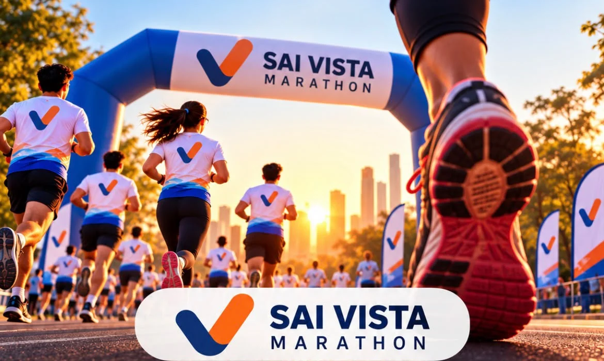

RAHATANI · PCMC · PUNE
Sai Vista Marathon 2026
A 3K or 5K community run. One shared starting line.
Join neighbours, families and friends on Sunday, 29 November 2026. Report at 5:45 AM IST at Sai Vista Multipurpose Court, Rahatani, Pimpri-Chinchwad, Pune. The run starts and finishes at Sai Vista Society.
Search marathon entriesSearch by bib number or registered mobile number.

Race day
Running with children
All ages are welcome. Children aged 12 and under must be accompanied by a parent throughout the run.
Questions or sponsorship enquiries?
Contact Paresh on 8149525915 for marathon or payment questions. Businesses interested in supporting the run can read our Sai Vista Marathon sponsorship information. Learn more about the Sai Vista Cultural Committee.
Updated by Sai Vista Cultural Committee. Contact us to confirm details or request a correction.